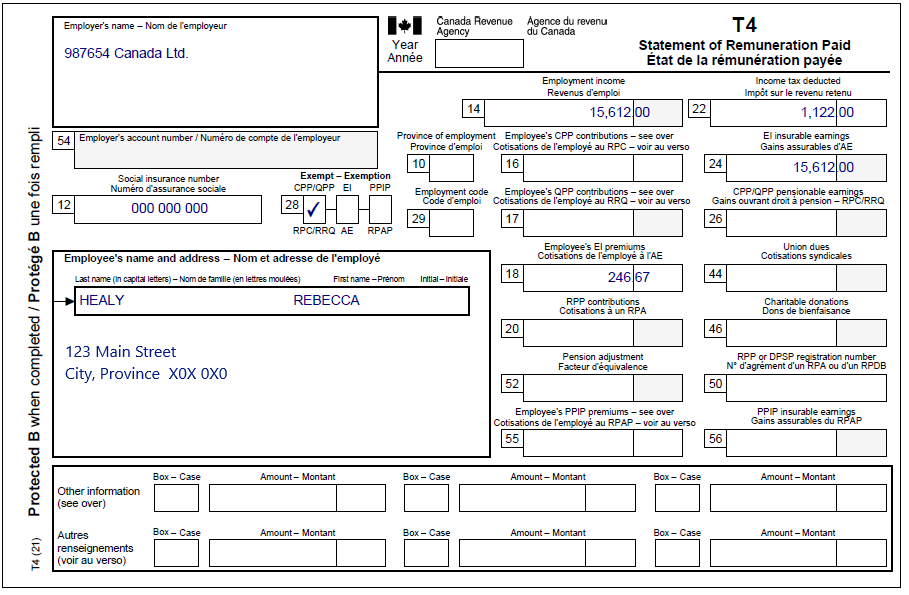
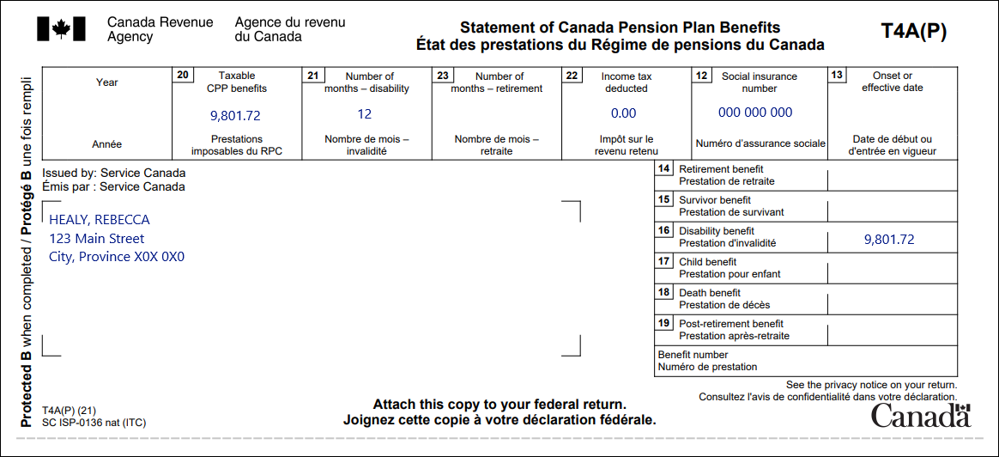

Claiming the disability tax credit
Pre-test question
Sorry, that's incorrect
Rebecca would not be able to claim this amount unless she was the one caring for someone else.
That's correct
Rebecca would not be able to claim this amount unless she was the one caring for someone else.
Instructions
- Open the tax software
- Review the Background information and Required slips (tax slips, receipts, etc.)
- Provide all required information for the appropriate sections of the tax software
- Once completed, compare your results with the solution provided
- Afterwards, refer to the Takeaway points
Background information
Situation
Rebecca receives the CPP disability benefit and works part-time. On December 1, 2022, she had her bathroom modified to make it accessible. The cost was $1,000. Rebecca has previously been approved for the disability tax credit (DTC). She wants to claim the DTC and the cost of the bathroom renovation on her tax return. She has a prescription from her doctor for the bathroom modification.
Identification information
| Name | Rebecca Healy |
|---|---|
| Social insurance number (SIN) | 000 000 000 |
| Address | 123 Main Street City, Province X0X 0X0 |
| Date of birth | March 8, 1960 |
| Marital status | Divorced |
Required slips
T4 – Statement of Remuneration Paid (987654 Canada Ltd.)
Text version of the T4 slip
T4 – Statement of Remuneration Paid
Protected B
Employer’s name: 987654 Canada Ltd.
Employee’s name and address:
Last name: Healy
First name: Rebecca
123 Main Street
City, Province X0X 0X0
Box 12: Social insurance number: 000 000 000
Box 14: Employment income: 15,612.00
Box 18: Employee’s EI premiums: 246.67
Box 22: Income tax deducted: 1,122.00
Box 24: EI insurable earnings: 15,612.00
Box 28: Exempt CPP/QPP is checked
T4A(P) – Statement of Canada Pension Plan Benefits
Text version of the T4A(P)
T4A(P) – Statement of Canada Pension Plan Benefits
Protected B
Sent by: Service Canada
Healy, Rebecca
123 Main Street
City, Province X0X 0X0
Box 12: Social insurance number: 000 000 000
Box 20: Taxable CPP benefits: 9,801.72
Box 21: Number of months – disability: 12
Box 22: Income tax deducted: 0.00
Box 16: Disability benefit: 9,801.72
Review your results
Solutions will be available Feb 2023 via link to PDF.
Takeaway points
Steps to follow
- Review their background information and required slips
- In Interview setup, tick the boxes next to:
- Employment income and employment insurance benefits (T4, T4E/RL-6) in the Employment income and other benefits section
- Pension income, other income and split pension income, COVID-19 benefits (T4A, T4A(OAS), T4A(P), T4A-RCA,T4RSP, T4RIF, T1032) in the Pension section
- Medical expenses, disability, caregiver in the Common tax deductions section
- Click T4 and employment income in the left-side menu, and click the + sign next to T4 to enter the information from the tax slip
- Click T4A and pension income in the left-side menu, and click the + sign next to add T4A(P) and enter the information from the tax slip
- Click Medical, disability, caregiver in the left-side menu, and click the + sign next to Infirmity and Disability amounts claim for yourself* (line 31600) in the Disability deductions, caregiver section
- Enter the applicable information into the Name or description of infirmity field, then select Claim disability amount (default) from the Are you eligible for the disability amount on federal line 31600? drop-down menu, and select Yes from the Does this infirmity provide entitlement to the Canada caregiver amount? drop-down menu
- Click Medical, disability, caregiver in the left-side menu and click the + sign next to Home accessibility expenses (line 31285) in the Disability deductions, caregiver section
- Select Let MaxBack decide (default) from the Select how you want to claim the Federal Home Accessibility Expenses credit drop-down menu and complete the Home renovation expenses section
Although the information is not transmitted to the CRA, the Name and description of infirmity is still a mandatory field when claiming the disability tax credit. If the individual does not volunteer this information, simply enter Disability into the field.
For more information refer to UFile instructions.